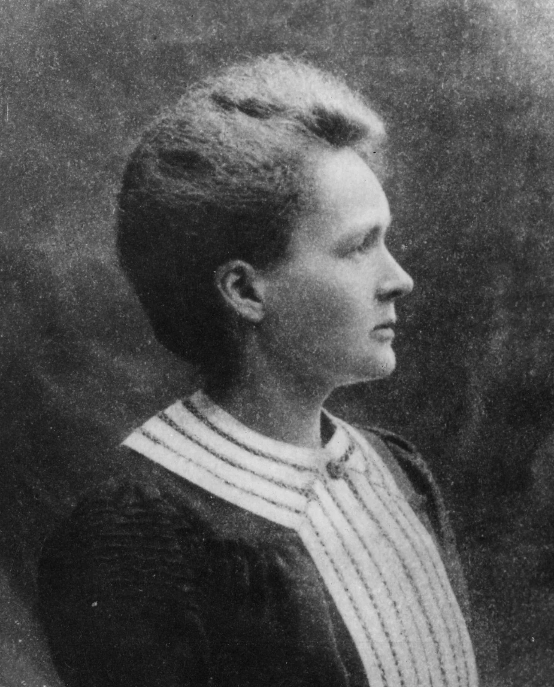
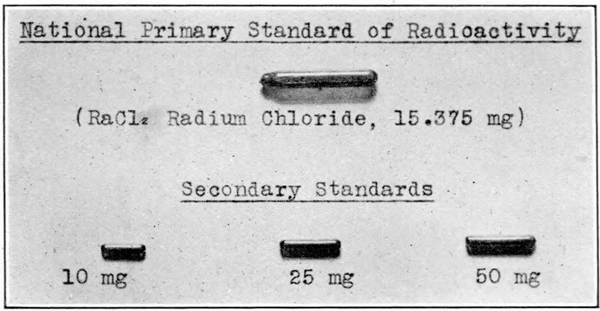
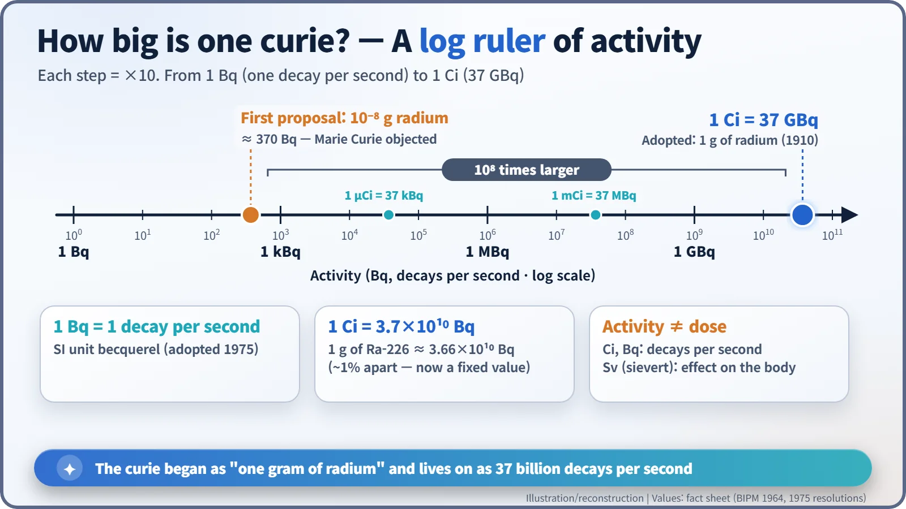
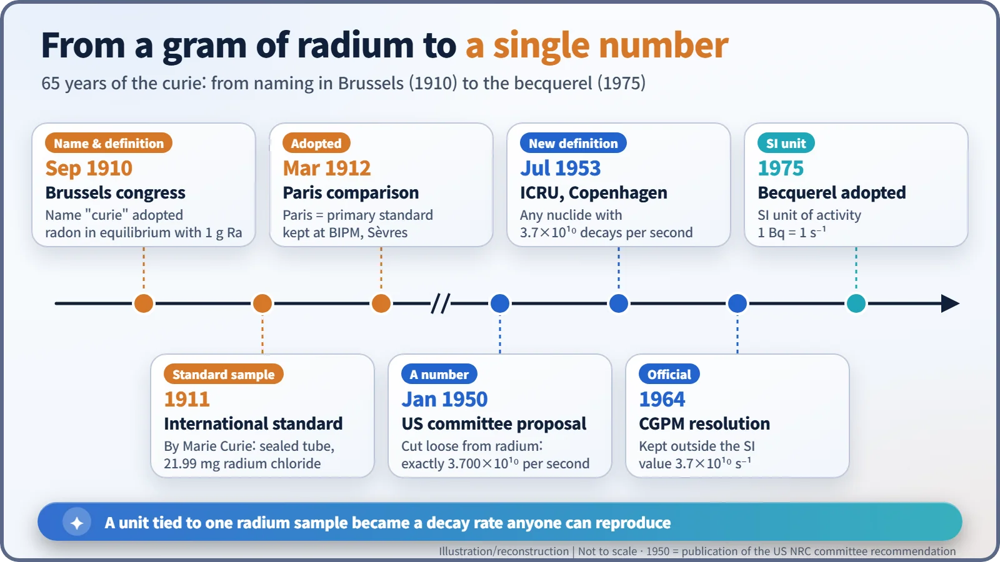

Nuclear History · 023
A Gram of Radium Becomes a Yardstick — The Birth of the Curie (1910)
A committee wanted a unit a hundred million times smaller; Marie Curie insisted on a full gram of radium, and the curie still carries that choice as 37 billion decays per second.
In September 1910 an international congress in Brussels gave radioactivity its first common unit and named it the "curie". A committee first wanted it a hundred million times smaller; Marie Curie insisted on the activity of a full gram of radium. Decades later the unit was cut loose from radium and fixed at exactly 37 billion decays per second, and in 1975 the SI becquerel joined it.
Why 37 billion?
Thirty-seven billion. If that many atomic nuclei decay in one second, the amount of material doing the decaying has a name: one curie (Ci). US regulations on radioactive materials still talk about millicuries and microcuries today. But why such an awkward number? Why not a tidy ten billion, or a hundred billion? Behind that oddly specific figure lies a meeting room in Brussels in the autumn of 1910, and a scientist who would not accept anything smaller than one gram. [7]
Every lab had its own "radium scale"
In the early 1900s radium was rare and expensive. Doctors bought it to treat cancer, and laboratories lent samples to one another for experiments. The trouble was that nobody measured strength the same way. Some labs quoted a weight; others quoted how fast the needle of an electrometer moved. Radium was crossing borders, and science and trade both needed a common yardstick.
September 1910: naming a unit in Brussels
From 13 to 15 September 1910, the International Congress of Radiology and Electricity met in Brussels, Belgium. During the congress an International Radium Standards Committee was formed, with Ernest Rutherford (1871–1937) as chairman and Stefan Meyer (1872–1949) of the Vienna Radium Institute as secretary. [1]
The name came from outside the committee. On the opening day, the Göttingen physicist Eduard Riecke (1845–1915) proposed that "the name 'curie' be given to a radiometric unit". According to the proceedings (in English translation), Marie Skłodowska-Curie (1867–1934) "accepted the proposal of Mr. Riecke, for the honor rendered the memory of Pierre Curie". Pierre had died in a street accident in Paris in 1906. [1]

A hundred-millionth of a gram, or a whole gram?
The real argument was about size. The committee first decided that one curie should be the amount of radon in equilibrium with 10−8 g of radium, a hundred-millionth of a gram. Rutherford had seen trouble coming: in a letter to Meyer dated 8 September 1910, he predicted that Marie Curie would want one gram, while for everyday work "a practical unit would be wanted that could be conveniently applied to the quantities normally worked with". [1]
He was right. According to letters from the American chemist Bertram Boltwood, a committee member, Marie Curie changed her position overnight and objected that using the name "curie" for so tiny a quantity was "altogether inappropriate". The one-gram version won. Rutherford's report in Nature that October gave the definition: "the quantity or mass of radium emanation in equilibrium with one gram of radium (element)". [1]
"Emanation" was the gas radium gives off as it decays: radon. Seal radium in a container and radon builds up until, after about a month, it decays as fast as it is produced. At this point, called radioactive equilibrium, the radon's activity equals the radium's. In other words, one curie meant "as much radioactivity as one gram of radium".
So whose name is it? The proceedings mention Pierre. Rutherford's 1913 book says "in honor of M. and Mme. Curie". A. S. Eve, Rutherford's biographer, wrote "in honor of Madame". The records disagree, and it is fairest not to pick a side. [1]
A sealed glass tube as the world's reference
A unit needs a physical reference, much as the metre once had its platinum bar. In 1911 Marie Curie sealed 21.99 mg of pure radium chloride in a thin glass tube. In March 1912 the committee met in Paris and compared it with standards made in Vienna by Otto Hönigschmid. The Paris sample became the international primary standard and was placed in the care of the International Bureau of Weights and Measures (BIPM) at Sèvres, near Paris. The US Bureau of Standards had its own radium standard calibrated against it in 1913. [5]


Cutting the cord: 37 billion per second
Tying the unit to a gram of radium had a weakness. Every time scientists refined radium's half-life or atomic weight, the size of the unit shifted. Using today's values, one gram of radium-226 undergoes about 3.66 × 1010 decays per second (roughly 36.6 billion), about 1% short of 37 billion.
So the unit was cut loose from radium. A US National Research Council committee, set up in November 1947, recommended defining the curie as "that quantity of any radioactive species (radioisotope) undergoing exactly 3.700 × 1010 disintegrations per second"; its recommendation was published in Physics Today in January 1950. [4] In July 1953, at a meeting in Copenhagen, the International Commission on Radiological Units (ICRU) adopted this definition. In 1964 the General Conference on Weights and Measures (CGPM) agreed "that the curie be still retained, outside SI, as unit of activity, with the value 3.7 × 1010 s−1". [2] That is why sources disagree on when the number was fixed: 1953 marks the definition by the specialist radiation-units body, 1964 its official acceptance by the CGPM. [6]
In 1975 the CGPM adopted the becquerel (Bq), one decay per second, as the SI unit of activity. [3] One curie is therefore 37 billion becquerels, or 37 GBq. One caution: curies and becquerels count how often a source decays, nothing more. The effect of radiation on the human body is measured in a different unit, the sievert (Sv). The same number of becquerels can mean very different doses depending on the radionuclide, the distance and the time of exposure.
| Unit | Equivalent | Status |
|---|---|---|
| 1 curie (Ci) | 3.7 × 1010 Bq = 37 GBq | Outside the SI (CGPM 1964) |
| 1 millicurie (mCi) | 37 MBq | Outside the SI |
| 1 microcurie (μCi) | 37 kBq | Outside the SI |
| 1 becquerel (Bq) | 1 decay per second | SI unit (CGPM 1975) |

Once everyone measured radium with the same yardstick, medical radium could be compared and dosed, and later radiation-safety standards were built on that shared language. Thanks to a scientist who insisted on a whole gram, that language still carries the Curie name.